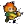

| - | Character | Speed | - | - | Score | - |
|---|---|---|---|---|---|---|
| Aria | 14:33.26 | 377th | 4564 | 805th | ||
| Bard | 4:44.26 | 140th | 14982 | 271st | ||
| Bolt | 6:53.60 | 179th | 3284 | 499th | ||
| Cadence | 7:17.63 | 172nd | 15390 | 478th | ||
| Diamond | 6:46.06 | 140th | 6537 | 483rd | ||
| Dorian | 6:54.78 | 182nd | 3314 | 571st | ||
| Dove | 3:20.04 | 65th | 1531 | 59th | ||
| Eli | 8:40.92 | 84th | 8604 | 48th | ||
| Mary | 11:56.45 | 166th | 4783 | 247th | ||
|  | Melody | 6:36.64 | 95th | 19968 | 43rd | |
| Monk | 9:52.54 | 81st | 6152 | 402nd | ||
| Nocturna | 8:45.55 | 120th | 20701 | 91st | ||
| Tempo | 5:12.35 | 68th | 4888 | 763rd | ||
| Coda | - | - | 185 | 286th | ||
| Story | 48:37.13 | 83rd | 11939 | 1071st | ||
| 9char | 2:06:16.69 | 69th | 25130 | 140th | ||
| 13char | 3:08:15.34 | 56th | 35383 | 100th |
| Speed | ||||||||||||||
| Hard | - | 12:07.3747th | - | 11:20.8834th | - | - | 9:36.4641st | - | - | 15:55.6352nd | - | 39:35.022936th | - | - |
| NR | - | 12:58.5654th | - | 31:05.06901st | - | - | 4:58.1525th | - | - | 10:39.8121st | - | 13:35.8019th | - | - |
| Rando | - | 9:55.0162nd | - | 12:04.6544th | - | - | 8:34.0141st | - | - | 15:25.9170th | - | 20:17.8794th | - | - |
| Phasing | - | 7:41.3365th | - | 8:08.7132nd | - | - | 3:33.5161st | - | - | 6:33.6234th | - | 11:25.4234th | - | - |
| Mystery | - | 30:28.11867th | - | 15:15.0949th | - | - | 7:29.0724th | - | - | 9:52.5119th | - | 22:44.5156th | - | - |
| Low | - | - | - | - | - | - | - | - | - | - | - | - | - | - |
| Speed | |||
| Low | - | - | - |
| Score | ||||||||||||||
| Hard | - | 4121778th | - | 4815657th | - | - | 44927th | 218279th | - | 2444304th | - | 55961394th | - | - |
| NR | - | 2545639th | - | 21571956th | 539136th | - | 62210th | - | - | 281928th | - | 1892173rd | 29063rd | - |
| Rando | - | 26652275th | - | 26272337th | - | - | 43826th | - | - | 4592308th | - | 9073466th | - | - |
| Phasing | - | 16601971st | - | 31891096th | - | - | 88432nd | - | - | 1826512th | - | 2992690th | - | - |
| Mystery | - | 4074481st | - | 3640379th | 460335th | - | 166121st | - | 54168th | 2748233rd | - | 492886th | - | - |
| Deathless | 1-1-379th | 9-1-265th | 1-3-392nd | 11-1-2127th | 2-1-352nd | 5-1-135th | 23-4-312th | 5-1-126th | 1-3-448th | 18-1-320th | 5-1-222nd | 4-3-352nd | 2-1-443rd | 0-1-352nd |
Last Updated:2022/07/17 03:51